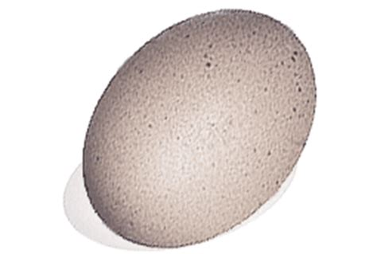
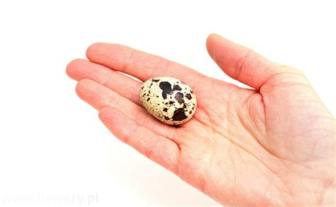

Jaja
Jajo - dobre gotowane na twardo lub sadzone
Gotowane na twardo
Jajo wsadzić do garnka z wodą. Wodę posolić, a garnek postawić na palącym się gazie. Czekać 15 minut.
Sadzone
Na patelni rozgrzać jakiś olej. Rozbić jajko i wylać zawartość na patelnie. Smażyć według uznania.
Jajo strusie
Jajo strusie to kilka zwykłych jaj. Pochodzą one od strusi, a jedno takie jajo potrafi wyżywić pół dorosłego człowieka na cały dzień.
Strusie
 Strusie tak naprawdę nie chowają głowy w piasek.
Pochodzenie
Strusie można spotkać w zoo, ale nie w każdym.
Jajo przepiórcze
Bardzo małe jajo. Mówi się, że jest bardzo zdrowe. Nie wiadomo czy jest tak samo zdrowe jeżeli się go nie ugotuje.
Przepiórki.
Małe ptaki. Nieloty? hmmmmm
Pochodzenie
Zamieszkuje niemal całą Europę, Azję Środkową i Południową oraz Afrykę.
